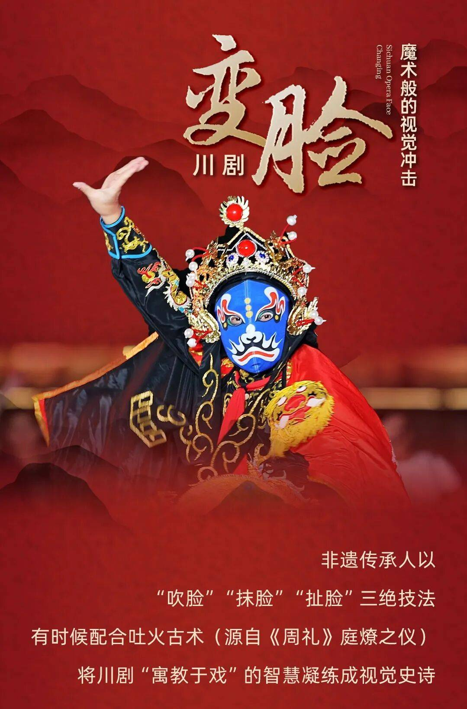

川剧变脸是川剧表演艺术中重要的特技，诞生于四川地区戏曲舞台，凭借瞬间变换脸谱的神奇表演闻名海内外。
变脸不仅是视觉表演艺术，更是巴蜀地域文化的缩影，承载着戏曲人物情绪、善恶形象表达，2006年列入国家级非物质文化遗产名录。它源于民间戏曲艺术的创造，历经数代艺人不断改良，形成抹脸、吹脸、扯脸、运气变脸等多种绝技，表演时节奏明快、变幻莫测，极具舞台冲击力。一张脸谱代表一种性格、一段故事、一份情怀，红脸表忠义、黑脸显刚烈、花脸喻神异，通过色彩与图案传递人物内心变化。作为巴蜀文化的标志性符号，川剧变脸既保留传统技艺精髓，又不断融入现代舞台表现形式，多次走出国门惊艳世界，成为传播中华优秀传统文化、展现东方艺术魅力的重要载体，在当代依然深受大众喜爱，持续焕发非遗文化的生命力。
现如今各地纷纷开设非遗体验场馆与戏曲研习班，专业艺人悉心收徒授课，手把手传授独门技法，让古老技艺得以薪火接续。同时变脸元素频繁融入文旅演出、国风综艺与文创产品，打破圈层壁垒拉近和年轻群体的距离。这门艺术凝聚着老一辈艺人的匠心汗水，也寄托着后辈守护文脉的初心，它跨越地域与语言隔阂，持续向外界展现华夏戏曲独有的艺术底蕴，让这份珍贵的非遗财富长久延续下去。
川剧变脸不只是简单的舞台特技，更是戏曲人物情感表达的延伸，演员通过精准的变脸节奏，配合身段、唱腔与神态，将角色的喜怒哀乐、正邪善恶直观展现出来，让观众无需台词就能读懂人物心境。区别于其他戏曲表演，变脸技艺极具独特性与观赏性，每一次脸谱切换都经过千锤百炼，是艺人日复一日刻苦练习的成果。如今，众多非遗传承人积极创新，将传统变脸与现代灯光、国风音乐结合，适配各类舞台场景，让古老非遗摆脱老旧刻板印象，以鲜活新颖的姿态走进大众视野，持续传承巴蜀文脉，绽放传统艺术的独特光彩。
